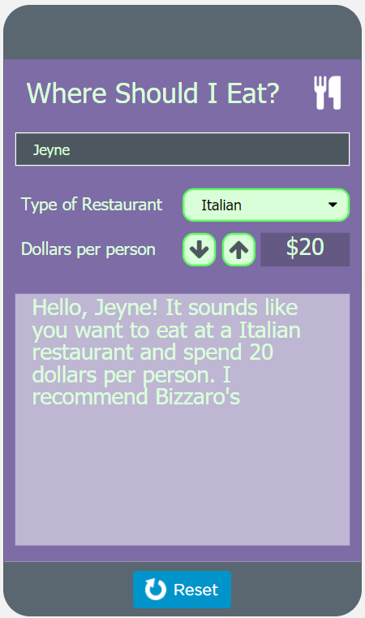
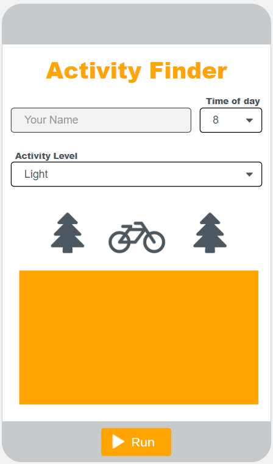
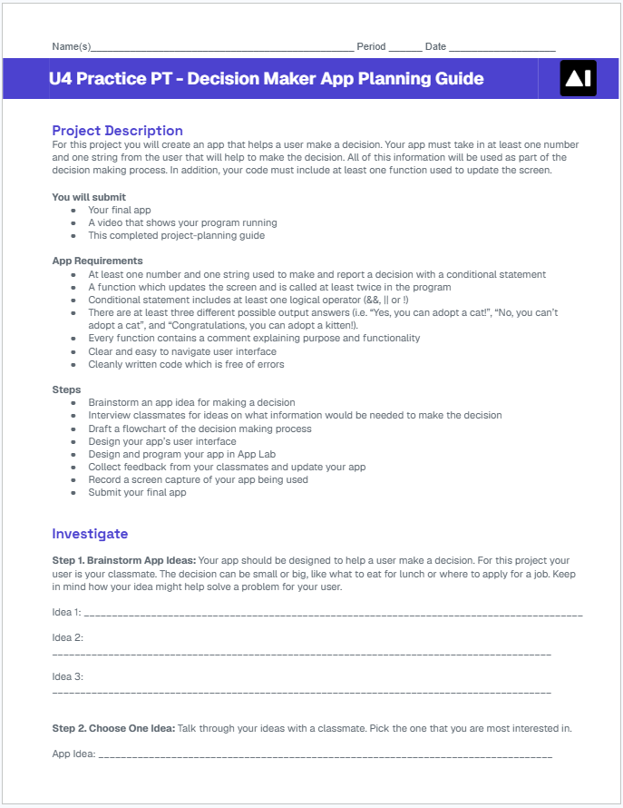

Today you will explore two sample apps that help a user make a decision. Then you will plan your own Decision Maker App.
Over the next three days you will build an app that helps a user make a decision. The app takes in at least one number and one string from the user, and a conditional uses them to make the decision.
This project is practice for the Create Performance Task, so you will plan, build, test, and explain your app the same way.
Day 1Explore two sample apps and plan your own.
Day 2Build your app in App Lab.
Day 3Test it with classmates, improve it, and submit it.

Open Lesson 12, Level 1 on Code.org.
This app recommends a restaurant. Try it with several different names, restaurant types, and prices, and watch how the recommendation changes.
When does the screen update? Is there a button you have to click, or does it change on its own?
1What does this app do?
2What are the inputs?
3What are the outputs?
4What variables do you think this app needs to work?
5What kinds of conditional logic do you think make it work?
6How could a function be used in this app?
Bizzaro’s is for users who want Italian food and will spend $20 or less. Which condition picks Bizzaro’s only in that case?
type == "Italian" || price <= 20type = "Italian" && price <= 20type == "Italian" && price <= 20price == "Italian" && type <= 20
Continue to Level 2 and try the Activity Finder. Choose different times of day and activity levels.
Which inputs are numbers and which are strings?
1What does this app do?
2What are the inputs?
3What are the outputs?
4What variables do you think this app needs to work?
5What kinds of conditional logic do you think make it work?
6How could a function be used in this app?

Now it is your turn. For the rest of today you will plan your own app in the Decision Maker App Planning Guide.
You should have:
You will submit the completed planning guide with your app and a video of it running.
At least one number and one string are used to make and report the decision with a conditional.
A function updates the screen and is called at least twice in the program.
The conditional uses at least one logical operator: &&, ||, or !
There are at least three different possible answers the app can show.
Every function has a comment explaining its purpose and how it works.
The screen is clear and easy to navigate.
The code is cleanly written and free of errors.
An app asks for a name and an age. When age >= 18 && citizen == "yes" it shows “Yes, you can vote!” Otherwise it shows “Not yet!” Which requirement does it miss?
Step 1Brainstorm three app ideas.
Step 2Choose one idea with a classmate.
Step 3Survey your classmates about what information the decision needs.
Step 4Plan how your app will store that information in variables.
Step 5Draw a flowchart of the decision.
Step 6Design the user interface.
Your app should help a user make a decision. For this project, your user is a classmate, so think about decisions people in this room actually make.
The decision can be small, like what to eat for lunch, or big, like where to apply for a job. Write down three ideas in Step 1 of your planning guide.
Then talk through your ideas with a classmate and pick the one you are most interested in. Make sure your idea needs at least one number and one string to make the decision.
Your classmates are your users, so ask them what information they would need to make the decision. Write their answers in Step 3 of your planning guide.
For example, a restaurant picker might ask, “What would you want to know before you choose where to eat?” Classmates might answer the kind of food, how much they want to spend, or how far away it is.
Look for answers that come up more than once. Those are the inputs your app should ask for.
Every piece of information the decision needs gets its own variable. Here is how Sample App 1 could store its inputs.
| Variable | Type | What it stores | Comes from |
|---|---|---|---|
| name | string | The user’s name | A text input |
| type | string | The kind of restaurant | A dropdown |
| price | number | Dollars per person | The ↑ and ↓ buttons |
Fill in a table like this for your own app in Step 4.
A flowchart shows how your conditional makes the decision. Each question is checked in order, and the first one that is true picks the answer.
Sketch your screen in Step 6 of your planning guide. Include every input from your variables table and a place for the output.
Give each element an id that says what it is, like nameInput, typeDropdown, or resultOutput. Your code will use these names tomorrow.
Add a label beside each input so the user knows what to do. A clear, easy-to-use screen is one of the requirements.
What decision will your app help a user make? What number and what string will it use, and what are three answers it could show?